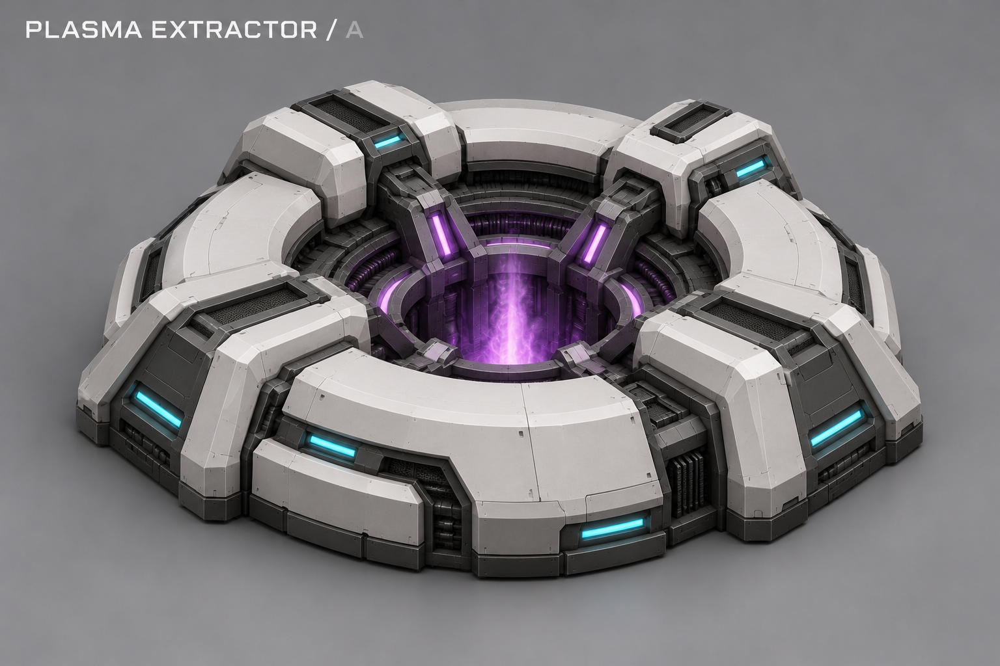
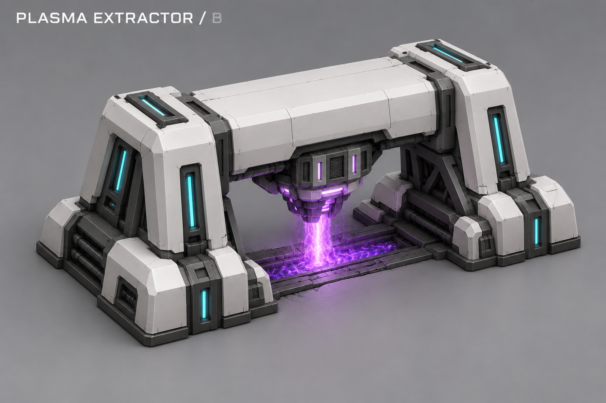
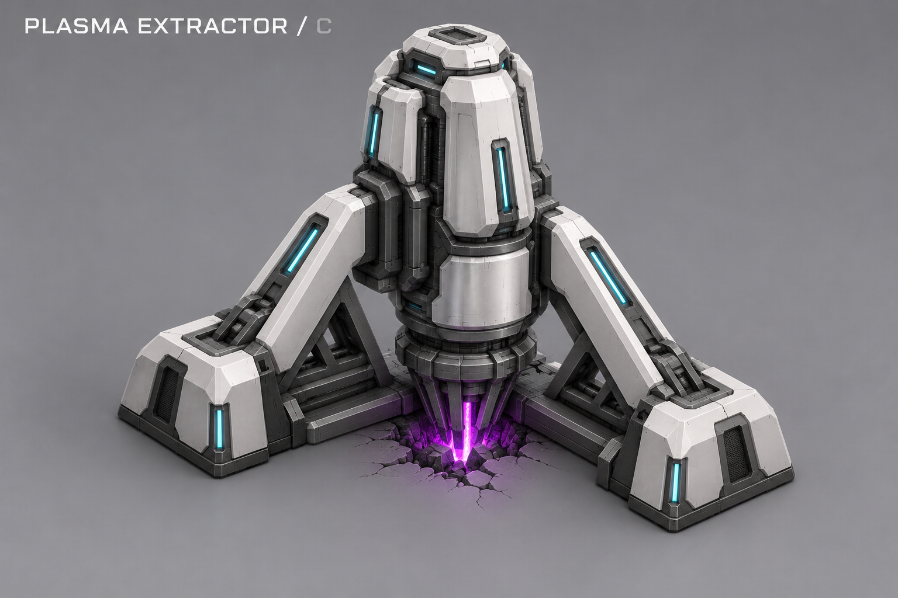
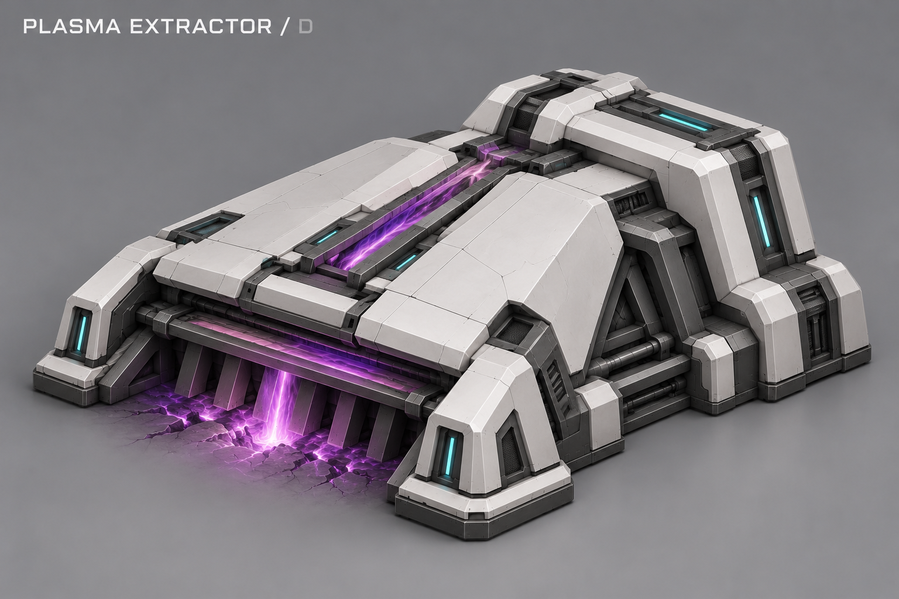
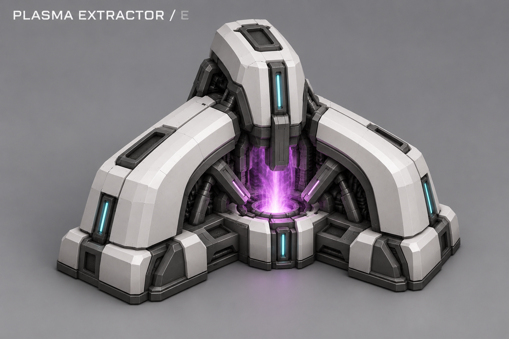
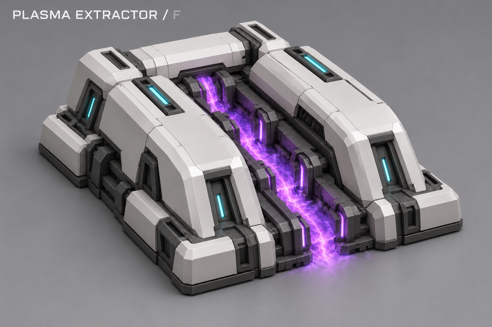

← Финальный документЭкстрактор плазмы Резонанса
Выбран A · 28 октября 2026 · B–F сохранены как история поиска.
Автоматическая добыча из разлома, без рабочих. Для работы нужна действующая собственная сеть. Светлые крупные панели и графитовая механика сохраняют стиль Резонанса; пурпурный поток показывает плазму, бирюзовые полосы — статус оборудования. Показанная конструкция остаётся предложением: она не задаёт цену, HP, размеры, доход или дополнительные механики.
Выбранный A: ракурсы, каркас и OBJ →
A · Кольцевой коллектор
Выбрано автором
Низкое кольцо вокруг разлома. Широкое основание и открытый центральный заборник.
B · Мостовой насос
Предложение
Мост над разломом: две опоры и единая поперечная насосная секция.
C · Глубинный зонд
Предложение
Вертикальный погружной зонд на трёх опорах. Компактный высокий силуэт.
D · Щелевой заборник
Предложение
Низкий броневой клин с широким щелевым заборником у земли.
E · Трёхлепестковый коллектор
Предложение
Три крупных коллектора вокруг центрального узла забора плазмы.
F · Кассетная станция
Предложение
Два параллельных преобразователя и продольный канал забора между ними.
Основной вид A закреплён; художественные ракурсы и контрольный каркас доступны в пакете моделирования. B–F не используются как текущая внешность.